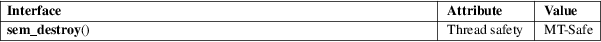

sem_destroy − destroy an unnamed semaphore
POSIX threads library (libpthread, −lpthread)
#include <semaphore.h>
int sem_destroy(sem_t *sem);
sem_destroy() destroys the unnamed semaphore at the address pointed to by sem.
Only a semaphore that has been initialized by sem_init(3) should be destroyed using sem_destroy().
Destroying a semaphore that other processes or threads are currently blocked on (in sem_wait(3)) produces undefined behavior.
Using a semaphore that has been destroyed produces undefined results, until the semaphore has been reinitialized using sem_init(3).
sem_destroy() returns 0 on success; on error, −1 is returned, and errno is set to indicate the error.
|
EINVAL |
sem is not a valid semaphore. |
For an explanation of the terms used in this section, see attributes(7).

POSIX.1-2008.
POSIX.1-2001.
An unnamed semaphore should be destroyed with sem_destroy() before the memory in which it is located is deallocated. Failure to do this can result in resource leaks on some implementations.
sem_init(3), sem_post(3), sem_wait(3), sem_overview(7)